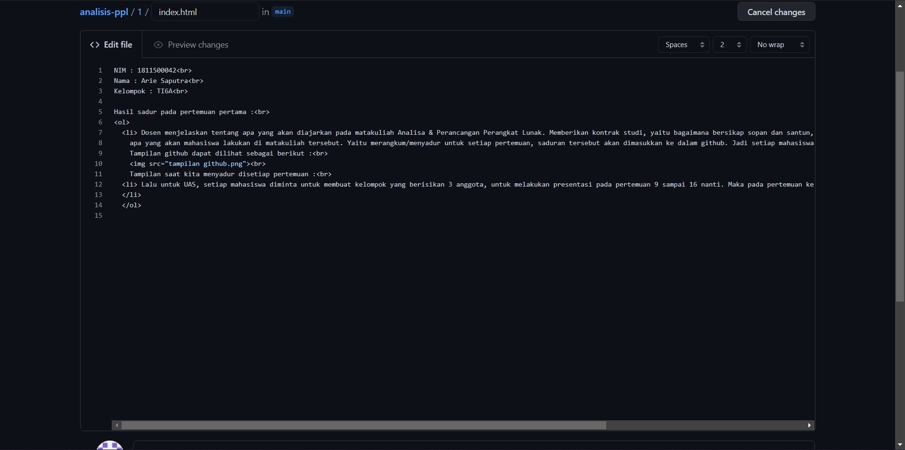

NIM : 1811500042
Nama : Arie Saputra
Kelompok : TI6A
Hasil sadur pada pertemuan pertama :
- Dosen menjelaskan tentang apa yang akan diajarkan pada matakuliah Analisa & Perancangan Perangkat Lunak. Memberikan kontrak studi, yaitu bagaimana bersikap sopan dan santun, menjelaskan tentang
apa yang akan mahasiswa lakukan di matakuliah tersebut. Yaitu merangkum/menyadur untuk setiap pertemuan, saduran tersebut akan dimasukkan ke dalam github. Jadi setiap mahasiswa wajib membuat akun github terlebih dahulu.
Tampilan github dapat dilihat sebagai berikut :

Tampilan saat kita menyadur disetiap pertemuan :

- Lalu untuk UAS, setiap mahasiswa diminta untuk membuat kelompok yang berisikan 3 anggota, untuk melakukan presentasi pada pertemuan 9 sampai 16 nanti. Maka pada pertemuan ke 6, mahasiswa sudah diminta untuk memberikan list anggotanya kepada dosen.